남자가 권태기일 때,
여자만 모르는 말들
(싸운 것도 아닌데 멀게 느껴진다면.)
1/14
@mszexc
넘겨보세요 →
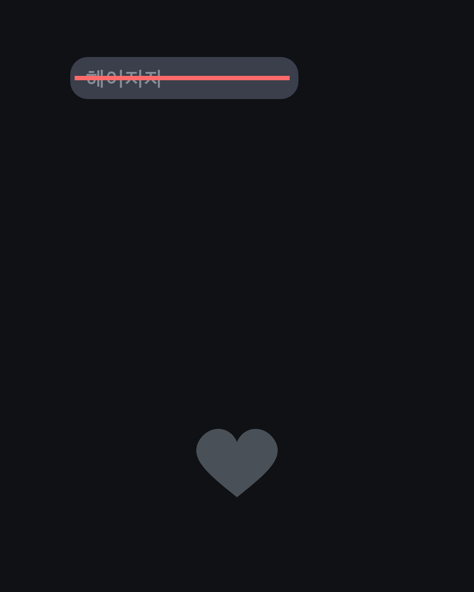
권태기 남자는
헤어지자는 말을 안 해요.
2/14
@mszexc
남자들끼리 하는 말 #52
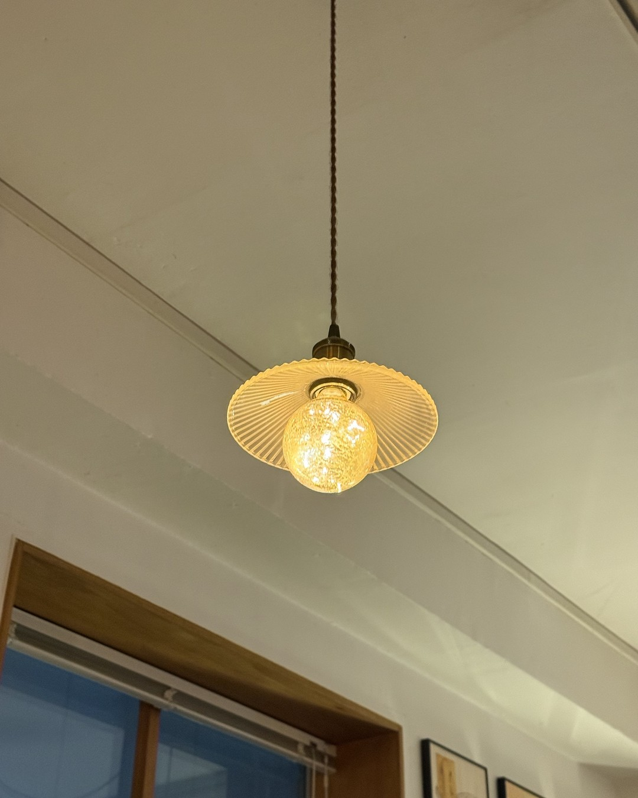
대신 평범한 말 속에
권태기가 숨어 있어요.
(그래서 여자만 몰라요.)
3/14
@mszexc
남자들끼리 하는 말 #52
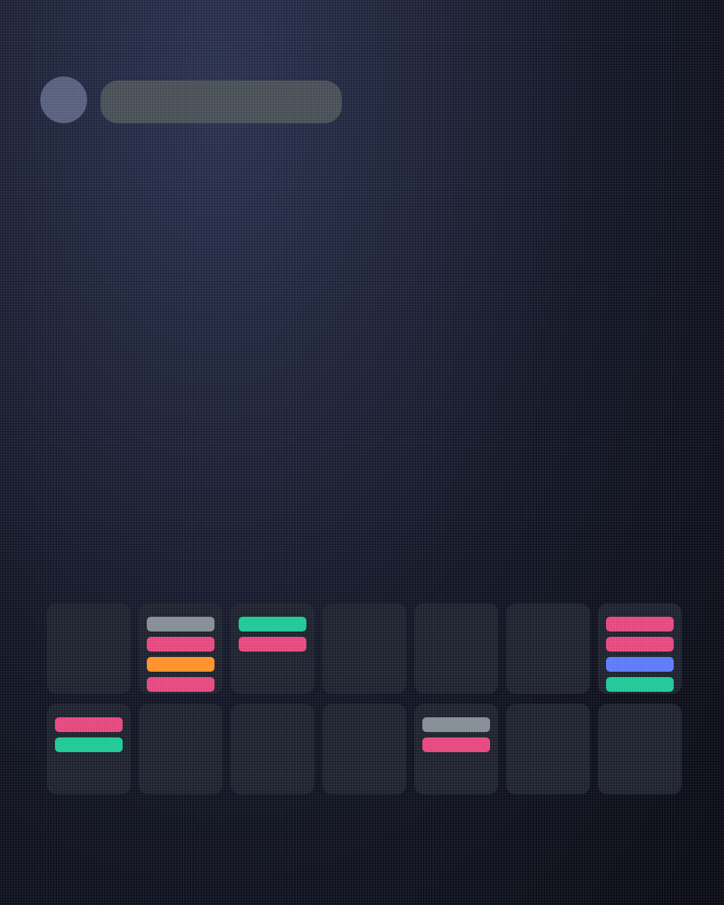
첫 번째.
"아무 데나 괜찮아."
(정하는 수고를 하기 싫은 거예요.)
4/14
@mszexc
남자들끼리 하는 말 #52

두 번째.
"그냥 집에 있자."
(편해서가 아니라, 준비할 마음이 없어서.)
5/14
@mszexc
남자들끼리 하는 말 #52
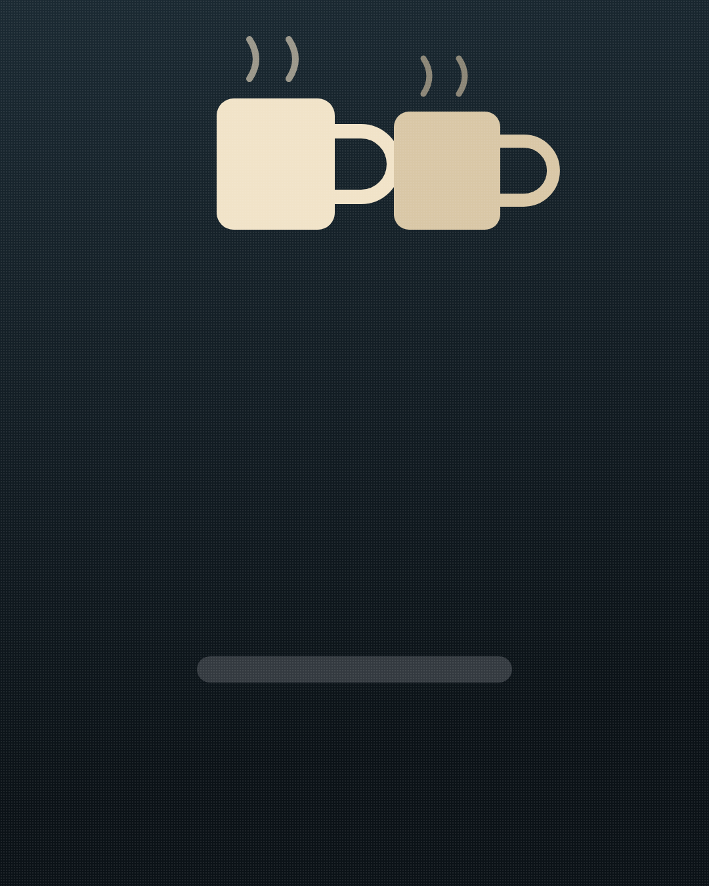
세 번째.
"응, 그래."
(대답은 하는데, 질문이 없어요.)
6/14
@mszexc
남자들끼리 하는 말 #52
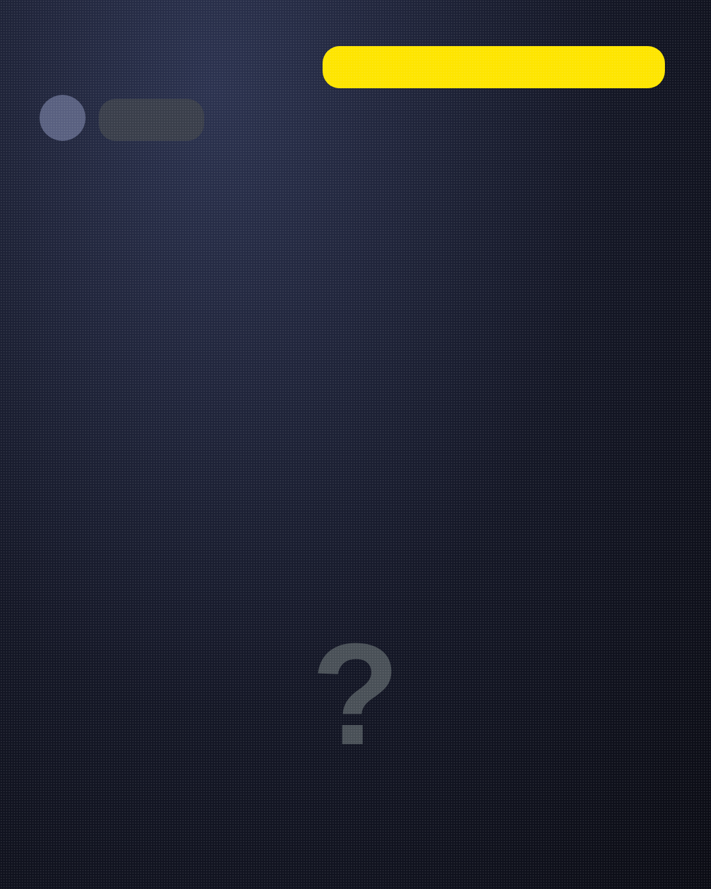
네 번째.
"다음에 하자."
(그 "다음"이 날짜로 돌아오지 않아요.)
7/14
@mszexc
남자들끼리 하는 말 #52
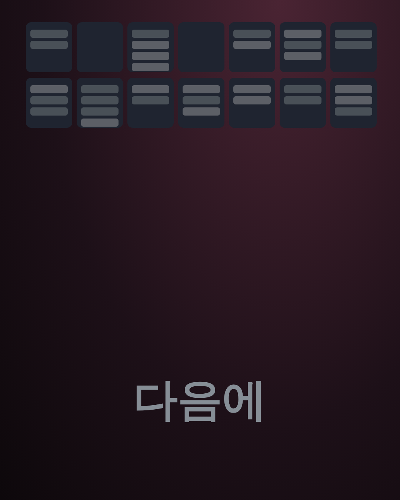
남자들끼리는 이렇게 말해요.
"싫은 건 아닌데, 설레지가 않아."
(마음이 끝난 게 아니라, 습관이 된 거예요.)
8/14
@mszexc
남자들끼리 하는 말 #52
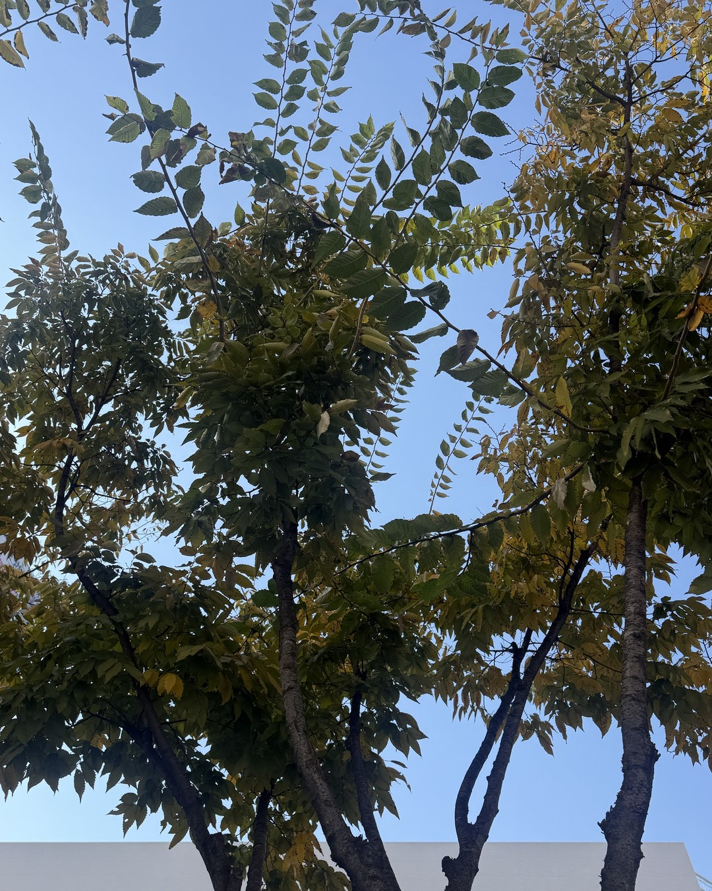
중요한 건 이거예요.
권태기는 끝이 아니라, 신호예요.
9/14
@mszexc
남자들끼리 하는 말 #52
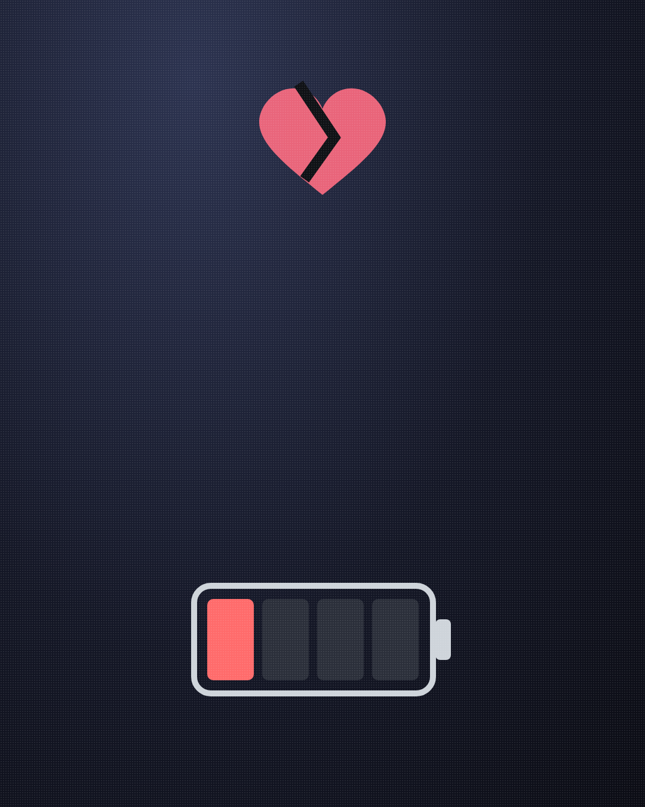
이때 하면 안 되는 말.
"너 나 안 좋아하지?"
(증명할 힘이 없어서, 남자는 더 멀어져요.)
10/14
@mszexc
남자들끼리 하는 말 #52
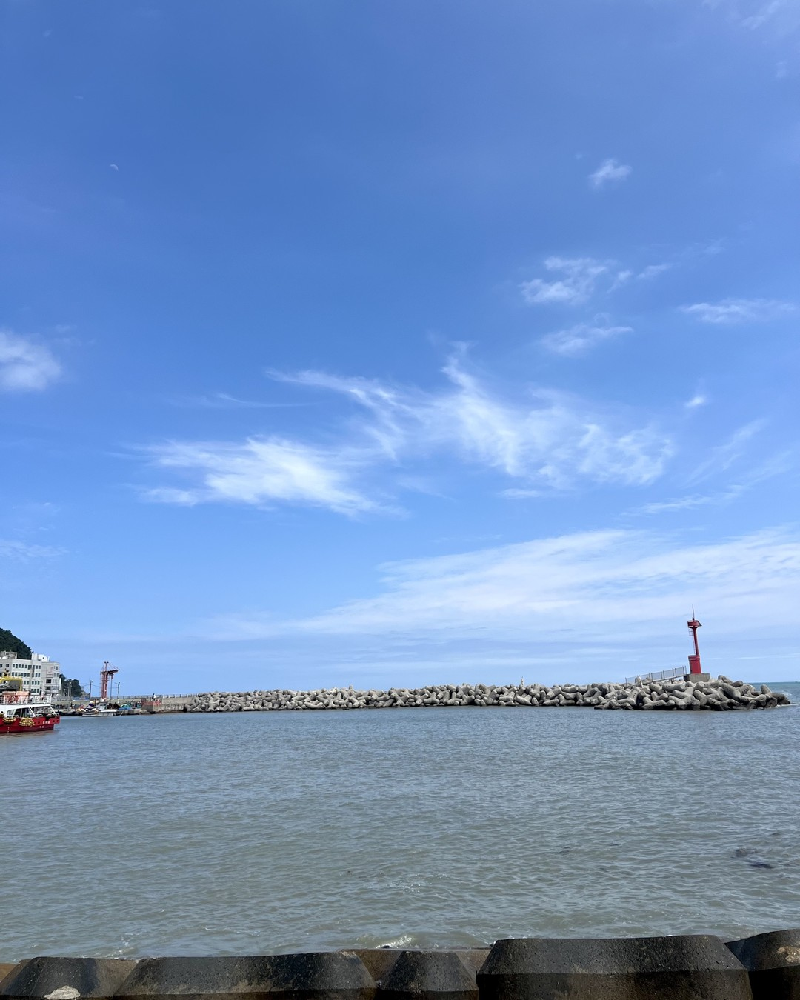
대신 이렇게 해보세요.
처음 만났을 때 했던 걸, 한 번만.
(그 카페, 그 길, 그 음식.)
11/14
@mszexc
남자들끼리 하는 말 #52
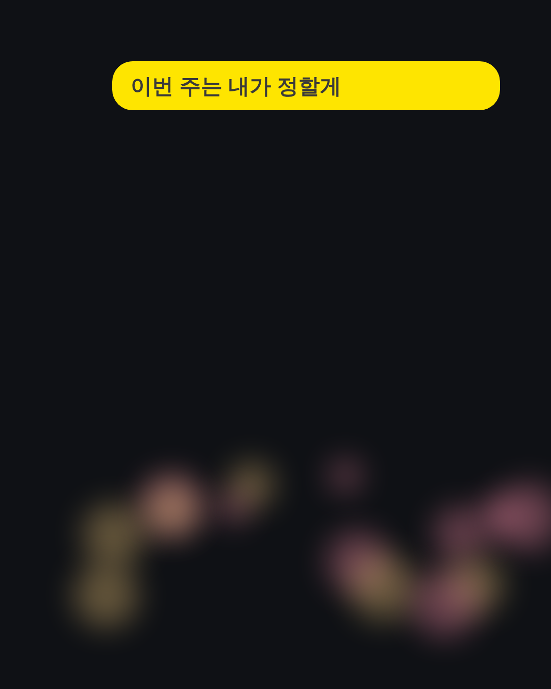
그리고 짧게 말하세요.
"요즘 우리 좀 심심했지? 이번 주는 내가 정할게."
12/14
@mszexc
남자들끼리 하는 말 #52
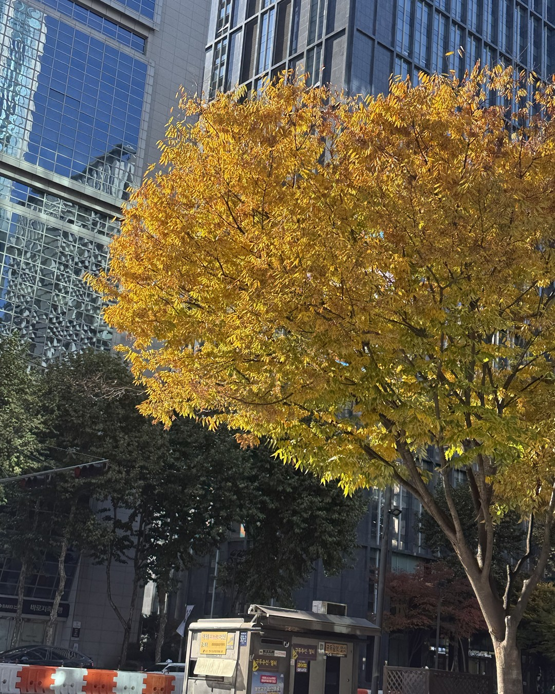
이 말에 같이 들뜨는 남자는
아직 괜찮아요.
(끝까지 "아무 데나"라면, 그때는 대화가 필요해요.)
13/14
@mszexc
남자들끼리 하는 말 #52
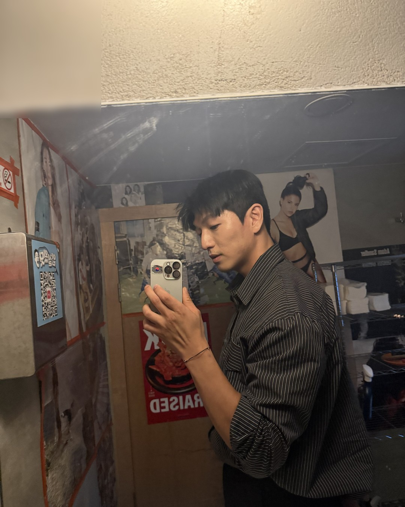
이것만 기억하세요.
권태기는 말이 줄어드는 게 아니라, 질문이 사라지는 거예요.
남자가 하는 말의 뜻은 전자책 1·2권에 · 프로필 링크에서 무료로 받아보세요
14/14
@mszexc
남자들끼리 하는 말 #52